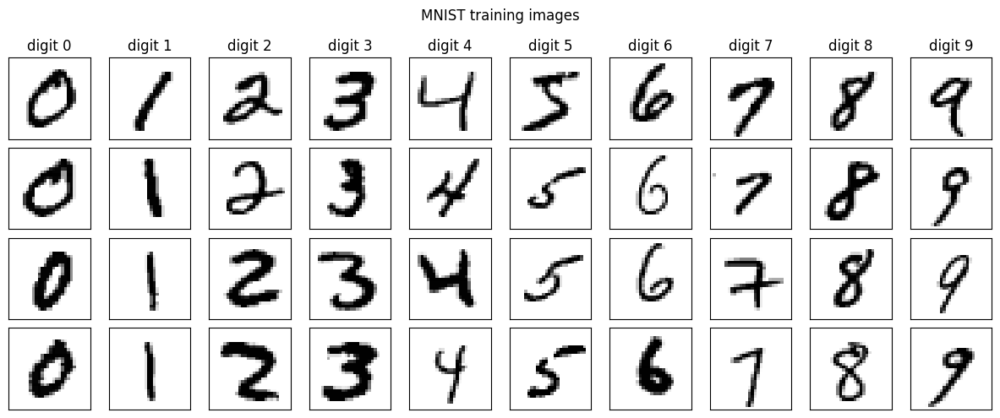
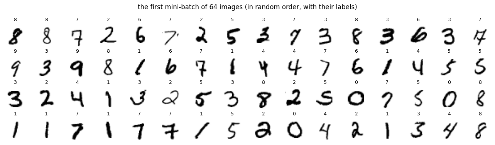
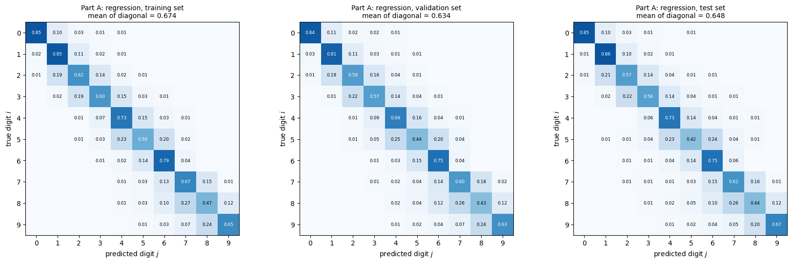
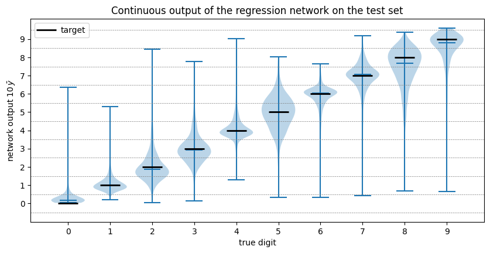
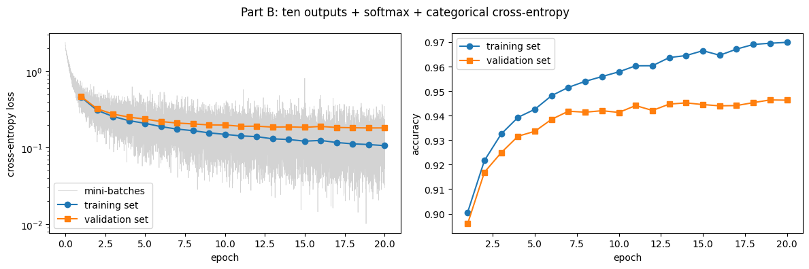
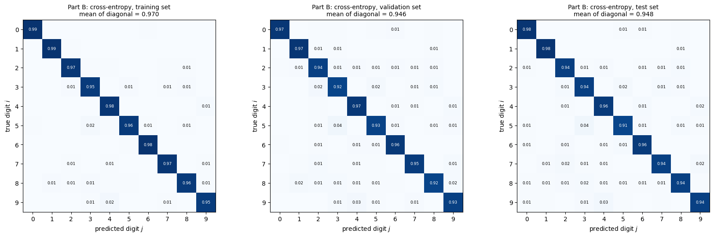
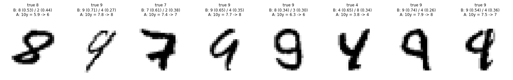
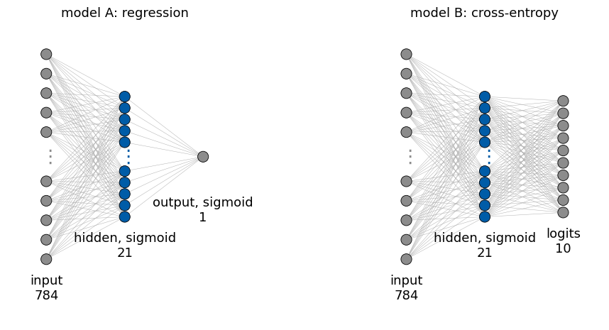
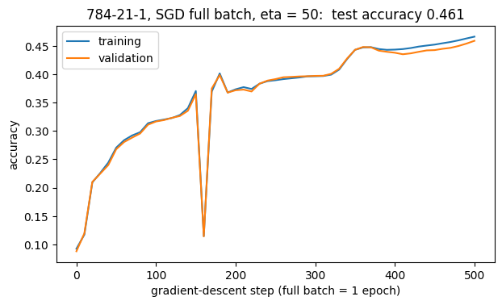

This notebook follows the MNIST example of Chapter 2 in detail. MNIST (Modified National Institute of Standards and Technology database) is a collection of images of handwritten digits, and the same feed-forward network is trained on it twice, in two different formulations of the task.
The first formulation, model A, treats classification as regression with a single output node (Section Image Classification with a Single Output Node of the chapter). The flattened image of \(784\) pixels goes through one hidden layer of \(21\) sigmoid nodes (as in the chapter) to one sigmoid output \(\bar y\) between 0 and 1. The network is trained with the mean squared error (MSE) to reproduce the digit divided by \(10\), and the prediction is \(10\,\bar y\) rounded to an integer. The second formulation, model B, is classification with ten output nodes and the categorical cross-entropy (Section Multiclass Classification and Categorical Cross-Entropy). It has the same hidden layer (784 → 21 sigmoid nodes), but \(10\) outputs, turned into probabilities by the softmax and trained with the cross-entropy against one-hot labels.
Both networks have the same hidden layer (784 → 21 sigmoid nodes, about \(16\,500\) parameters), the same data, the same optimiser, the same number of epochs. They differ only in the output layer and the loss function. The single-output regression recognises about \(65\%\) of the test digits, the ten-output cross-entropy network about \(95\%\) (the chapter reports \(56\%\) and \(95\%\)). The difference comes from how the task is posed: the output layer and the loss together. Exercise 2 shows that the ten outputs account for most of the gain (ten sigmoid outputs trained with the MSE already reach about \(94\%\)).
Nothing is hidden in a library call. We download the original MNIST files and decode their binary format with NumPy, without torchvision.datasets (Section 1), look at the data (Section 2), and flatten, standardise and split the images into training, validation and test sets with a few lines of NumPy (Section 3). The training set is then cut into mini-batches with our own function, and we check that PyTorch’s Dataset and DataLoader produce exactly the same batches (Section 4). With these pieces we write the complete training loops of both models, record their learning curves and evaluate them with confusion matrices (Box 2.11) in Sections 5 and 6, compare them in Section 7, and test the conclusions in five exercises.
The whole notebook runs on a CPU (central processing unit) in a few minutes.
To run this notebook in Google Colab, proceed as follows. 1. Go to https://colab.research.google.com → File → Upload notebook (or open it from Google Drive). 2. Run cells one by one with Shift + Enter. Run them in order — later cells use variables defined earlier. 3. The required packages (numpy, matplotlib, torch) are pre-installed in Colab; no pip install required. 4. The data (about 11 MB) are downloaded once and reused on later runs. In Colab the downloaded files are lost when the runtime is recycled. 5. If the notebook state becomes inconsistent: Runtime → Restart session and run from the top.
Code
import os, gzip, time, urllib.requestimport numpy as npimport matplotlib.pyplot as pltimport torchimport torch.nn as nntorch.manual_seed(0) # fixes the random initial parametersrng = np.random.default_rng(0) # NumPy random generator, used for the train/validation splitprint("PyTorch", torch.__version__, " NumPy", np.__version__)
PyTorch 2.14.1+cpu NumPy 2.2.6
1. The original MNIST files
1.1 Download
MNIST is distributed as four compressed files (.gz): images and labels, each for the training part (\(60\,000\) images) and the test part (\(10\,000\) images). Libraries such as torchvision or keras download exactly these files and decode them. Both steps take only a few lines of Python.
urllib.request.urlretrieve(url, path) downloads a file from the internet and saves it on disk. The data set was introduced by Y. LeCun, L. Bottou, Y. Bengio and P. Haffner, Gradient-based learning applied to document recognition, Proc. IEEE 86, 2278–2324 (1998), doi:10.1109/5.726791; its original web page, http://yann.lecun.com/exdb/mnist/, no longer serves the files reliably, so we use two public copies (mirrors) and take the first one that works. A file that is already on disk is not downloaded again.
Code
DATA_DIR ="data/MNIST_raw"MIRRORS = ["https://ossci-datasets.s3.amazonaws.com/mnist/", # copy used by torchvision"https://storage.googleapis.com/cvdf-datasets/mnist/"] # copy used by tensorflowFILES = {"train_images": "train-images-idx3-ubyte.gz","train_labels": "train-labels-idx1-ubyte.gz","test_images": "t10k-images-idx3-ubyte.gz","test_labels": "t10k-labels-idx1-ubyte.gz"}def download(filename):# Download one MNIST file into DATA_DIR (only if it is not there yet) and return its path. path = os.path.join(DATA_DIR, filename)if os.path.exists(path):return path os.makedirs(DATA_DIR, exist_ok=True)for mirror in MIRRORS:try: urllib.request.urlretrieve(mirror + filename, path)return pathexceptExceptionas err:print(f" {mirror} failed: {err}")if os.path.exists(path): os.remove(path) # remove a partially downloaded fileraiseRuntimeError(f"could not download {filename}")paths = {key: download(name) for key, name in FILES.items()}for key, path in paths.items():print(f"{key:13s}{path:45s}{os.path.getsize(path) /1e6:5.2f} MB")
After decompression each file is a sequence of bytes (ubyte = unsigned byte, an integer \(0\dots255\)) in the very simple IDX format:
bytes
content
0–1
always 0, 0
2
data type; 8 (hex 0x08) means unsigned bytes
3
number of dimensions \(d\): 3 for images (number, rows, columns), 1 for labels
4 … \(4+4d-1\)
the \(d\) sizes, each a 4-byte integer, most significant byte first (big-endian)
then
the data, one byte per pixel or label, row after row
gzip.open decompresses on the fly. We read the first 16 bytes of the training images:
Code
with gzip.open(paths["train_images"], "rb") as f: header = f.read(16) # 4 bytes "magic number" + 3 sizes of 4 bytesprint("first 16 bytes:", list(header))sizes = np.frombuffer(header, dtype=">i4") # ">i4" = big-endian 4-byte integerprint("as four big-endian integers:", sizes)print("data type byte:", header[2], " number of dimensions:", header[3])
first 16 bytes: [0, 0, 8, 3, 0, 0, 234, 96, 0, 0, 0, 28, 0, 0, 0, 28]
as four big-endian integers: [ 2051 60000 28 28]
data type byte: 8 number of dimensions: 3
The four integers are \(2051\) (the “magic number”, 0x00000803: data type 08, \(3\) dimensions), \(60\,000\) images, \(28\) rows and \(28\) columns. For example, the number of images follows from bytes 4–7 above as \[60\,000 = 0\cdot256^3 + 0\cdot256^2 + 234\cdot256 + 96 . \tag{1}\]
A complete reader is a few lines. np.frombuffer interprets raw bytes as an array without copying; offset skips the header.
Code
def read_idx(path):# Read an IDX file (gzip-compressed) into a NumPy array of unsigned bytes.with gzip.open(path, "rb") as f: raw = f.read()assert raw[0] ==0and raw[1] ==0and raw[2] ==0x08, "not an IDX file of unsigned bytes" n_dims = raw[3] shape = np.frombuffer(raw, dtype=">i4", count=n_dims, offset=4) # the d sizes data = np.frombuffer(raw, dtype=np.uint8, offset=4+4* n_dims) # all the restreturn data.reshape(shape)X_train_full = read_idx(paths["train_images"])y_train_full = read_idx(paths["train_labels"])X_test_raw = read_idx(paths["test_images"])y_test_raw = read_idx(paths["test_labels"])for name, a in [("X_train_full", X_train_full), ("y_train_full", y_train_full), ("X_test_raw", X_test_raw), ("y_test_raw", y_test_raw)]:print(f"{name:13s} shape {str(a.shape):16s} dtype {a.dtype} values {a.min()} ... {a.max()}")print("first 20 training labels:", y_train_full[:20])
That is the whole data set: an array of \(60\,000\) images \(28\times 28\) with integer pixel values \(0\) (background) to \(255\) (ink), the corresponding labels \(0\dots9\), and the same for the \(10\,000\) test images. Everything that follows works with these NumPy arrays.
2. A look at the data
2.1 Examples of every class
imshow draws a 2D array as an image; the colour map "gray_r" shows \(0\) as white and \(255\) as black, as on paper.
Code
fig, axes = plt.subplots(4, 10, figsize=(12, 5))for k inrange(10): positions = np.flatnonzero(y_train_full == k)[:4] # first four training images with label kfor row, p inenumerate(positions): ax = axes[row, k] ax.imshow(X_train_full[p], cmap="gray_r") ax.set_xticks([]); ax.set_yticks([]) axes[0, k].set_title(f"digit {k}")fig.suptitle("MNIST training images")fig.tight_layout(); plt.show()

2.2 Images per class
np.bincount(y, minlength=10) counts how often each of the values \(0,\dots,9\) occurs.
The classes are nearly balanced (between about \(9\%\) and \(11\%\) each), so a model that always answers the same digit would be right in only about \(10\%\) of the cases, and so would random guessing. Any useful model must do much better than \(10\%\).
2.3 The mean image of every class
Averaging all training images of one digit shows the “typical” shape and how much it varies (blurred regions = places where different writers put the ink differently).
The networks of this notebook (dense / fully connected) take a vector as input. A \(28\times28\) image becomes a vector of \(m\) numbers, 784 of them, by writing the rows one after another: pixel \((i, j)\) (row \(i\), column \(j\)) goes to position \[p = 28\,i + j . \tag{2}\] This is what reshape does (NumPy and PyTorch store arrays row by row, so no data are moved).
Code
img = X_train_full[0] # one image, shape (28, 28)vec = img.reshape(784) # the same numbers, shape (784,)i, j =6, 14print(f"pixel (row {i}, column {j}) = {img[i, j]}, vector element {28* i + j} = {vec[28* i + j]}")fig, axes = plt.subplots(1, 2, figsize=(13, 3), gridspec_kw={"width_ratios": [1, 4]})axes[0].imshow(img, cmap="gray_r"); axes[0].set_title(f"image, label {y_train_full[0]}")axes[1].plot(vec, lw=0.8)for r inrange(1, 28): axes[1].axvline(28* r, color="grey", lw=0.3) # boundaries between image rowsaxes[1].set_xlim(0, 784); axes[1].set_xlabel("position in the vector (= 28 * row + column)"); axes[1].set_ylabel("pixel value")axes[1].set_title("the same image as a vector of 784 numbers (grey lines: start of a new image row)")fig.tight_layout(); plt.show()
Each bump in the right panel is one image row crossing the stroke. The network sees only this list of \(784\) numbers: it does not know which pixels are neighbours. (Convolutional networks, discussed later in Chapter 2, use the 2D arrangement.)
3. Splitting the data set (Box 2.10)
3.1 Training, validation and test sets
The three sets have different roles. The training set is used to change the parameters (gradient descent). The validation set is used during development: to watch for overfitting and to choose settings (number of epochs, learning rate, architecture). The test set is used once, at the very end, to report the final quality; if it were used to choose settings, it would no longer measure performance on new data. For teaching purposes the analyses and exercises below also look at the test set; in a real project such comparisons would be made on the validation set.
The MNIST test file is our test set. The \(60\,000\) training images are split at random into \(50\,000\) for training and \(10\,000\) for validation. The split must be random: a data file may be ordered (by class, by writer, by date of collection), and the first images of a file need not be representative of the rest. rng.permutation(n) returns the numbers \(0,\dots,n-1\) in a random order; the first \(50\,000\) of them select the training images.
Code
n_full =len(X_train_full)perm = rng.permutation(n_full) # a random order of 0, ..., 59999idx_train, idx_val = perm[:50_000], perm[50_000:]print("first 10 entries of the permutation:", perm[:10])print("training indices:", len(idx_train), " validation indices:", len(idx_val))print("common indices:", len(np.intersect1d(idx_train, idx_val))," together they cover all images:", np.array_equal(np.sort(np.concatenate([idx_train, idx_val])), np.arange(n_full)))X_tr_img, y_tr_np = X_train_full[idx_train], y_train_full[idx_train]X_va_img, y_va_np = X_train_full[idx_val], y_train_full[idx_val]X_te_img, y_te_np = X_test_raw, y_test_raw
first 10 entries of the permutation: [ 4013 23840 29603 43011 58703 2290 55984 52800 34316 12976]
training indices: 50000 validation indices: 10000
common indices: 0 together they cover all images: True
Indexing a NumPy array with an array of indices (X_train_full[idx_train]) picks the rows in that order. No image is in both sets, and together they use every image exactly once. The random split gives training and validation sets with the same class proportions, which also match the test file:
As in the chapter, the input vectors are standardised to mean \(0\) and standard deviation \(1\): \[\mathbf x \;\leftarrow\; \frac{\mathbf x - \mu}{s}, \tag{3}\] with one number \(\mu\) (mean) and one number \(s\) (standard deviation) computed over all pixels of all training images. Inputs of order one keep the pre-activations \(\mathbf W\mathbf x + \mathbf b\) in the range where the sigmoid is not flat, which makes gradient descent work well.
\(\mu\) and \(s\) are computed from the training set only and then applied unchanged to validation and test data. Using statistics of the test set would let information about the test data leak into the model (data leakage); in a real application the test data are not even available when the model is built.
Finally the arrays are converted to PyTorch tensors: inputs as float32 (the default type of PyTorch parameters), labels as int64 (the type PyTorch expects for class indices).
Code
def flatten(images):# (N, 28, 28) uint8 -> (N, 784) float32return images.reshape(len(images), -1).astype(np.float32)X_tr_flat, X_va_flat, X_te_flat = flatten(X_tr_img), flatten(X_va_img), flatten(X_te_img)mu, s = X_tr_flat.mean(), X_tr_flat.std() # from the TRAINING set onlyprint(f"training-set pixel statistics: mean {mu:.2f}, std {s:.2f} (on the 0..255 scale)")X_tr = torch.from_numpy((X_tr_flat - mu) / s)X_va = torch.from_numpy((X_va_flat - mu) / s)X_te = torch.from_numpy((X_te_flat - mu) / s)y_tr = torch.from_numpy(y_tr_np.astype(np.int64))y_va = torch.from_numpy(y_va_np.astype(np.int64))y_te = torch.from_numpy(y_te_np.astype(np.int64))for name, X, y in [("train", X_tr, y_tr), ("val", X_va, y_va), ("test", X_te, y_te)]:print(f"{name:5s} X {tuple(X.shape)}{X.dtype} mean {X.mean():+.3f} std {X.std():.3f} y {tuple(y.shape)}{y.dtype}")
training-set pixel statistics: mean 33.33, std 78.57 (on the 0..255 scale)
train X (50000, 784) torch.float32 mean +0.000 std 1.000 y (50000,) torch.int64
val X (10000, 784) torch.float32 mean -0.001 std 1.000 y (10000,) torch.int64
test X (10000, 784) torch.float32 mean +0.006 std 1.008 y (10000,) torch.int64
The training inputs have mean \(0\) and standard deviation \(1\) by construction; validation and test inputs are close to that but not exactly, since they were transformed with the training statistics. The background pixels (\(0\)) become about \(-0.42\), full ink (\(255\)) becomes about \(2.8\).
4. Mini-batches
4.1 Mini-batches from a random permutation
The gradient of the loss is an average over images. Computing it over all \(50\,000\) images before every parameter update (full-batch gradient descent, as in the chapter’s equations) is expensive. Instead, in every epoch (one pass over the training set):
the training indices are put in a new random order,
the order is cut into consecutive pieces of batch_size indices (mini-batches),
for each mini-batch the loss and its gradient are computed on these images only, and the parameters are updated.
Every image is used exactly once per epoch; one epoch makes \(\lceil 50\,000/B\rceil\) updates (with \(B\) the batch size). The gradient of a mini-batch is a noisy estimate of the full gradient (stochastic gradient descent), but many cheap noisy steps are much faster than a few exact ones.
The function below produces the index arrays of the mini-batches. It is a Python generator: yield hands out one value and pauses the function until the next value is requested by the for loop, so the batches are produced one at a time.
Code
def batch_indices(n, batch_size, shuffle=True, generator=None):# Yield index tensors of consecutive mini-batches covering 0, ..., n-1 once. order = torch.randperm(n, generator=generator) if shuffle else torch.arange(n)for start inrange(0, n, batch_size):yield order[start:start + batch_size] # the last batch may be shorterbatch_size =64batches =list(batch_indices(len(X_tr), batch_size, generator=torch.Generator().manual_seed(0)))print("number of mini-batches per epoch:", len(batches), " ( = ceil(50000 / 64) =", int(np.ceil(50000/64)), ")")print("sizes of the first three and of the last batch:", [len(b) for b in batches[:3]], len(batches[-1]))print("first batch indices:", batches[0][:10].tolist(), "...")all_used = torch.sort(torch.cat(batches)).valuesprint("every training image used exactly once:", torch.equal(all_used, torch.arange(len(X_tr))))
number of mini-batches per epoch: 782 ( = ceil(50000 / 64) = 782 )
sizes of the first three and of the last batch: [64, 64, 64] 16
first batch indices: [36044, 49165, 37807, 11341, 6091, 16904, 36293, 28026, 24681, 17849] ...
every training image used exactly once: True
With batches of 64 images, \[50\,000 = 781\cdot 64 + 16 , \tag{4}\] hence \(782\) batches, the last one with \(16\) images. A batch of data is then X_tr[idx], y_tr[idx]: a \(64\times784\) matrix \(X_i\) (one image per row, as in the chapter’s feed-forward pass) and a vector of \(64\) labels.
Code
idx = batches[0]xb, yb = X_tr[idx], y_tr[idx]print("one mini-batch: inputs", tuple(xb.shape), " labels", tuple(yb.shape))fig, axes = plt.subplots(4, 16, figsize=(13, 3.8))for ax, x, y inzip(axes.flat, xb, yb): ax.imshow(x.reshape(28, 28), cmap="gray_r") # back to 28 x 28 for display only ax.set_title(str(y.item()), fontsize=9); ax.axis("off")fig.suptitle("the first mini-batch of 64 images (in random order, with their labels)")fig.tight_layout(); plt.show()
one mini-batch: inputs (64, 784) labels (64,)

4.2 Dataset and DataLoader
PyTorch packages these two steps into two classes from torch.utils.data. A Dataset knows how many samples there are (__len__) and returns sample number i (__getitem__), here a pair (image vector, label). A DataLoader takes a Dataset, shuffles the indices in every epoch, cuts them into batches, calls __getitem__ for every index of a batch, and stacks the results into batch tensors (collate).
Writing our own Dataset shows that there is nothing more to it. (For tensors already in memory PyTorch also offers the ready-made TensorDataset, which does the same.) For large data sets that do not fit into memory, __getitem__ would read one image from disk; the DataLoader can then load batches in parallel processes (num_workers). This is the main reason the classes exist.
Code
from torch.utils.data import Dataset, DataLoaderclass MNISTDataset(Dataset):# Pairs (image vector, label) stored as two tensors in memory.def__init__(self, X, y):self.X, self.y = X, ydef__len__(self):returnlen(self.X)def__getitem__(self, i):returnself.X[i], self.y[i]ds_tr = MNISTDataset(X_tr, y_tr)x0, y0 = ds_tr[0] # calls __getitem__(0)print("len(ds_tr) =", len(ds_tr), " ds_tr[0]: image", tuple(x0.shape), " label", y0.item())loader_tr = DataLoader(ds_tr, batch_size=64, shuffle=True, generator=torch.Generator().manual_seed(0))print("batches per epoch: len(loader_tr) =", len(loader_tr))xb_dl, yb_dl =next(iter(loader_tr)) # the first batch of one epochprint("one batch from the DataLoader:", tuple(xb_dl.shape), tuple(yb_dl.shape))
len(ds_tr) = 50000 ds_tr[0]: image (784,) label 1
batches per epoch: len(loader_tr) = 782
one batch from the DataLoader: (64, 784) (64,)
With shuffle=False both methods must give identical batches, and indeed they do. The timing shows the price of the generality: the DataLoader calls __getitem__\(50\,000\) times per epoch and stacks single images, while X_tr[idx] copies a whole batch in one operation.
Code
loader_fixed = DataLoader(ds_tr, batch_size=64, shuffle=False)same =all(torch.equal(xd, X_tr[idx]) and torch.equal(yd, y_tr[idx])for (xd, yd), idx inzip(loader_fixed, batch_indices(len(X_tr), 64, shuffle=False)))print("DataLoader(shuffle=False) gives the same batches as our own batching:", same)t0 = time.perf_counter()for idx in batch_indices(len(X_tr), 64): xb, yb = X_tr[idx], y_tr[idx]t_hand = time.perf_counter() - t0t0 = time.perf_counter()for xb, yb in loader_tr:passt_dl = time.perf_counter() - t0print(f"one epoch of batches: own function {t_hand:.3f} s, DataLoader {t_dl:.3f} s")
DataLoader(shuffle=False) gives the same batches as our own batching: True
one epoch of batches: own function 0.020 s, DataLoader 0.246 s
Both ways are used for training: model A (regression) uses our own batching function, model B (cross-entropy) the DataLoader. Each mini-batch has the same size and is drawn the same way, so the choice does not affect the comparison of the two models.
5. Model A: one sigmoid output and the mean squared error
5.1 Regression targets for the digits
The chapter imagines an unknown function \(G\) that maps the 784 pixels of an image to the digit \(0,\dots,9\) it shows, and treats learning \(G\) as non-linear curve fitting (regression), just as in the one-dimensional example of the Universal Approximation Theorem. The network (model A) has one output node with a sigmoid, so \[\bar y = f_{\boldsymbol\theta}(\mathbf x)\in(0,1) . \tag{5}\] The target of an image with digit \(y\) is the rescaled digit \[t = y/10\in\{0, 0.1, \dots, 0.9\}, \tag{6}\] and the loss is the mean squared error over a batch of \(B\) images, \[\mathcal L = \frac1B\sum_{i=1}^B \big(\bar y_i - y_i/10\big)^2 . \tag{7}\] The predicted digit is \(10\,\bar y\) turned into an integer.
How it is turned into an integer matters. int() in Python (and .long() in PyTorch) truncates, e.g. 2.97 becomes 2, although the output is closest to the target \(3\). The correct choice is rounding to the nearest integer, then clipping to \(0\dots9\). (With the sigmoid, \(10\bar y\) lies between 0 and 10, so \(9.6\) would round to \(10\).)
Code
outputs = torch.tensor([0.031, 0.297, 0.304, 0.649, 0.951]) # example values of the sigmoid outputprint("10 * y_bar :", (10* outputs).tolist())print("truncated (int) :", (10* outputs).long().tolist())print("rounded + clipped:", (10* outputs).round().clamp(0, 9).long().tolist())def predict_digit_regression(y_bar):# sigmoid output in (0,1) -> digit 0..9return (10* y_bar).round().clamp(0, 9).long()
As in the chapter, the input is the flattened standardised image (784 numbers), followed by one hidden layer of \(N^{(1)}\) = 21 nodes and the output node, all with the sigmoid \[\sigma(z) = \frac{1}{1+e^{-z}} , \tag{8}\]\[\bar{\mathbf h} = \sigma\big(\mathbf x W^{(1)T} + \mathbf b^{(1)}\big)\in(0,1)^{21},\qquad \bar y = \sigma\big(\bar{\mathbf h}W^{(2)T} + b^{(2)}\big)\in(0,1). \tag{9}\] The number of hidden nodes is kept in the variable N_HIDDEN, so that it can be changed in one place (Exercise 4 shows what wider and deeper networks do). nn.Linear(n_in, n_out) holds \(W\) of shape (n_out, n_in) and \(\mathbf b\) of length n_out, and computes the affine map inside the sigmoids of equation (9) for a batch of row vectors \(\mathbf x\). (The chapter has no bias in the output layer; with one extra parameter this makes no difference.)
Code
N_HIDDEN =21# nodes in the hidden layer, as in the chapterdef make_regression_model():return nn.Sequential( nn.Linear(784, N_HIDDEN), nn.Sigmoid(), # hidden layer nn.Linear(N_HIDDEN, 1), nn.Sigmoid(), # ONE output node, value in (0, 1) )torch.manual_seed(0)model_reg = make_regression_model()print(model_reg)for name, p in model_reg.named_parameters():print(f" {name:9s}{str(tuple(p.shape)):11s}{p.numel():7d} parameters")print("total:", sum(p.numel() for p in model_reg.parameters()))with torch.no_grad(): out = model_reg(X_tr[:5])print("output for 5 images, shape", tuple(out.shape), ":", out.squeeze(1).tolist())
The output has shape (B, 1), one column. The targets will have shape (B,), so the output is reshaped with .squeeze(1) before the loss is computed: nn.MSELoss given shapes (B, 1) and (B,) would broadcast them to a (B, B) matrix and compute something else; PyTorch only prints a warning, which is easy to overlook (a classic bug).
The untrained network gives nearly the same output, about 0.5, for every image (small random differences): it has not learned anything yet.
5.3 Loss and evaluation
A function that evaluates a model on a whole data set (all images at once, without gradients) returns the loss and the accuracy, the fraction of images whose predicted digit equals the label. The accuracy is what we care about, but it cannot be minimised by gradient descent: it is piecewise constant in the parameters, so its gradient is zero almost everywhere. The MSE changes smoothly.
untrained network on the validation set: MSE 0.0879, accuracy 0.087
5.4 Training loop
The loop is written out in full. The optimiser is Adam with learning rate \(10^{-3}\); the chapter uses plain gradient descent, while Adam is discussed in the section The Zoo of Optimization Algorithms and is much less sensitive to the choice of the learning rate (plain gradient descent is used in Exercise 5). One epoch is one pass over the \(782\) mini-batches of Section 4.1, and for each batch the loop performs the forward pass, computes the loss, clears the old gradients (zero_grad), computes \(\partial\mathcal L/\partial\boldsymbol\theta\) (backward) and updates the parameters (step). The loss of every mini-batch is stored, since it is cheap and shows the noise of stochastic gradient descent, and after every epoch the loss and accuracy on the full training and validation sets are computed with evaluate_regression.
model.train() / model.eval() switch layers (such as dropout, which randomly switches off nodes during training) between training and evaluation behaviour. This network has no such layers, but the calls belong to the standard loop.
epoch 1: MSE train 0.0187 val 0.0191 accuracy train 0.363 val 0.357
epoch 2: MSE train 0.0126 val 0.0133 accuracy train 0.515 val 0.505
epoch 4: MSE train 0.0094 val 0.0103 accuracy train 0.607 val 0.599
epoch 6: MSE train 0.0084 val 0.0096 accuracy train 0.622 val 0.609
epoch 8: MSE train 0.0077 val 0.0092 accuracy train 0.640 val 0.617
epoch 10: MSE train 0.0076 val 0.0095 accuracy train 0.641 val 0.618
epoch 12: MSE train 0.0070 val 0.0092 accuracy train 0.653 val 0.630
epoch 14: MSE train 0.0068 val 0.0091 accuracy train 0.660 val 0.636
epoch 16: MSE train 0.0067 val 0.0092 accuracy train 0.654 val 0.628
epoch 18: MSE train 0.0066 val 0.0091 accuracy train 0.665 val 0.640
epoch 20: MSE train 0.0062 val 0.0091 accuracy train 0.677 val 0.638
training took 14 s
5.5 Learning curves
The left panel shows the MSE: the thin line is the loss of the individual mini-batches (x-axis converted to epochs: batch \(k\) is at epoch \(k/782\)), and the markers are the losses on the full training and validation sets after every epoch. The right panel shows the accuracies.
The network learns, but slowly and not far: the validation accuracy rises from about \(9\%\) before training and \(36\%\) after one epoch to about \(60\%\) after four epochs and then creeps up to about \(64\%\) after twenty. The loss on the validation set flattens after about seven epochs, while the training loss continues to decrease slightly: the small hidden layer cannot do much better with this formulation of the task. The accuracy curve is jagged: a small change of the parameters can push many outputs across a rounding boundary \(k\pm0.5\) at once.
5.6 Confusion matrices (Box 2.11)
The confusion matrix\(C\) counts, for every pair (true digit \(i\), predicted digit \(j\)), how many images of digit \(i\) (in a given set) were predicted as \(j\). We show it for all three sets: training (the data the parameters were fitted to), validation (used during training to monitor the model) and test (used only now). Each row is normalised to sum to one, so \(C_{ij}\) is the fraction of images of digit \(i\) that were classified as \(j\); the diagonal element \(C_{ii}\) is the fraction of digit \(i\) recognised correctly. The mean of the diagonal is the accuracy averaged over classes (Box 2.11); since the MNIST classes are nearly balanced it is almost equal to the plain accuracy.
The matrix is built with one bincount: the pair \((i, j)\) is encoded as the single number \[n = 10\,i + j \in\{0,\dots,99\}, \tag{10}\] the occurrences are counted and arranged as a \(10\times10\) matrix.
Code
def confusion_matrix(y_true, y_pred, k=10): C = torch.bincount(k * y_true + y_pred, minlength=k * k).reshape(k, k).float()return C / C.sum(dim=1, keepdim=True) # each row (true class) sums to 1def plot_confusion(ax, C, title): im = ax.imshow(C, cmap="Blues", vmin=0, vmax=1)for i inrange(10):for j inrange(10):if C[i, j] >=0.005: ax.text(j, i, f"{C[i, j]:.2f}", ha="center", va="center", fontsize=6.5, color="white"if C[i, j] >0.5else"black") ax.set_xticks(range(10)); ax.set_yticks(range(10)) ax.set_xlabel("predicted digit $j$"); ax.set_ylabel("true digit $i$") ax.set_title(f"{title}\nmean of diagonal = {C.diagonal().mean():.3f}", fontsize=10)return imwith torch.no_grad(): y_bar_tr = model_reg(X_tr).squeeze(1) y_bar_va = model_reg(X_va).squeeze(1) y_bar_te = model_reg(X_te).squeeze(1)pred_reg_tr = predict_digit_regression(y_bar_tr)pred_reg_va = predict_digit_regression(y_bar_va)pred_reg_te = predict_digit_regression(y_bar_te)acc_reg_te = (pred_reg_te == y_te).float().mean().item()C_reg_tr = confusion_matrix(y_tr, pred_reg_tr)C_reg_va = confusion_matrix(y_va, pred_reg_va)C_reg = confusion_matrix(y_te, pred_reg_te)print(f"accuracy (regression): training {(pred_reg_tr == y_tr).float().mean():.3f}"f" validation {(pred_reg_va == y_va).float().mean():.3f} test {acc_reg_te:.3f}")fig, axes = plt.subplots(1, 3, figsize=(17, 5.3))plot_confusion(axes[0], C_reg_tr, "Model A (regression), training set")plot_confusion(axes[1], C_reg_va, "Model A (regression), validation set")plot_confusion(axes[2], C_reg, "Model A (regression), test set")fig.tight_layout(); plt.show()
accuracy (regression): training 0.677 validation 0.638 test 0.652

The test accuracy is about \(65\%\), higher than the \(56\%\) reported in the chapter, which uses full-batch gradient descent instead of Adam with mini-batches (see Exercise 5). The three matrices look almost the same. Training and test accuracies differ by only about 2–3 points, so overfitting is mild; validation and test agree, so the validation set, which we watched during training, was a reliable estimate of the performance on new data. The model is limited by the task as posed. The confusion matrix shows the characteristic pattern of the regression: the errors form bands next to the diagonal. A \(5\) is predicted as \(4\) or \(6\) in almost half of the cases, an \(8\) as \(7\) or \(9\) and a \(2\) as \(1\) or \(3\) in more than a third. Confusions between digits of similar shape but distant value (such as \(4\) and \(9\)) do not appear as such.
The continuous output shows why. For every true digit we plot the distribution of \(10\,\bar y\) over the test images (a violin plot: the width is the histogram of the values). The dashed horizontal lines are the rounding boundaries \(k\pm 0.5\); an image is classified correctly when its value lies in the band around its own digit.
Code
fig, ax = plt.subplots(figsize=(10, 4.5))ax.violinplot([10* y_bar_te[y_te == k].numpy() for k inrange(10)], positions=range(10), widths=0.8, showmedians=True)for b in np.arange(-0.5, 10, 1): ax.axhline(b, color="grey", lw=0.5, ls="--")ax.plot(range(10), range(10), "k_", ms=25, mew=2, label="target")ax.set_xticks(range(10)); ax.set_yticks(range(10))ax.set_xlabel("true digit"); ax.set_ylabel(r"network output $10\,\bar y$"); ax.legend(loc="upper left")ax.set_title("Continuous output of the regression network on the test set")plt.show()off = (pred_reg_te - y_te).abs()[pred_reg_te != y_te]print(f"wrong predictions: {len(off)} of {len(y_te)}; of these off by exactly 1: {(off ==1).float().mean():.0%}")

wrong predictions: 3480 of 10000; of these off by exactly 1: 76%
The output for each digit is centred near the target, but the distributions are wide, about one unit for most digits, and have long tails (the blue horizontal bars mark the minimum, median and maximum; the black bars the targets). Everything that leaks across a dashed line becomes a wrong digit, and leaking across one line is far more likely than across several: about three quarters of the wrong predictions are off by exactly one. \(0\), \(1\) and \(6\) are narrowest; \(5\) and \(8\), which sit in the middle of many other digits on the number line, are the widest and the worst recognised.
6. Ten outputs, softmax and categorical cross-entropy
6.1 One-hot encoding, softmax and the cross-entropy
In model B the network returns, instead of one number, ten numbers \(z_0,\dots,z_9\) (the logits), one per class. The softmax\[q_k = \mathrm{SoftMax}(\mathbf z)_k = \frac{e^{z_k}}{\sum_{j=0}^{9} e^{z_j}} \tag{11}\] turns them into a probability distribution \(\mathbf q\), \[q_k > 0, \qquad \sum_k q_k = 1 . \tag{12}\]\(q_k\) is read as the probability, according to the network, that the image shows digit \(k\). The predicted digit is the most probable one, \[\hat y = \arg\max_k q_k . \tag{13}\]
The label \(y\) is written as a one-hot vector \(\mathbf p\) (Box 2.7), \[p_k = \delta_{k,y} , \tag{14}\] which is the “true” distribution, with all probability on the correct class. Two distributions are compared with the Kullback–Leibler divergence (Box 2.8), \[\mathrm{KL}(\mathbf p\,\|\,\mathbf q) = \sum_k p_k\log\frac{p_k}{q_k} = \underbrace{\sum_k p_k\log p_k}_{-\,\mathcal H(\mathbf p)\ \text{(no }\boldsymbol\theta\text{)}}\;\underbrace{-\sum_k p_k\log q_k}_{\mathcal L_{\rm ce}} . \tag{15}\] (Here and below \(\log\) denotes the natural logarithm.) Only the second term depends on the network, so the loss is the categorical cross-entropy, averaged over the batch of \(B\) images. For a one-hot \(\mathbf p\) only the term of the true class survives: \[\mathcal L_{\rm ce} = -\frac1B\sum_{i=1}^{B}\sum_{k=0}^{9} p_{ik}\log q_{ik} = -\frac1B\sum_{i=1}^{B}\log q_{i,y_i} . \tag{16}\] It is \(0\) if the network gives probability \(1\) to the true class and grows without bound as that probability goes to \(0\).
In PyTorch, nn.CrossEntropyLoss takes the logits of shape (B, 10) and the labels as integers of shape (B,). It applies the softmax itself (in a numerically stable form, via the logarithm of the denominator of equation (11)), so the model must not end with a softmax layer. On random logits equation (16), written out with one-hot vectors, gives the same number.
Code
torch.manual_seed(0)z = torch.randn(5, 10) # logits for a batch of 5 imagesy5 = y_tr[:5] # their true labelsq = torch.softmax(z, dim=1) # probabilities, each row sums to 1p = nn.functional.one_hot(y5, num_classes=10).float() # one-hot labels, shape (5, 10)print("labels:", y5.tolist())print("one-hot p:\n", p.int())print("row sums of q:", q.sum(dim=1).tolist())ce_by_hand =-(p * torch.log(q)).sum(dim=1).mean()ce_torch = nn.CrossEntropyLoss()(z, y5)print(f"cross-entropy from the formula: {ce_by_hand:.6f} nn.CrossEntropyLoss: {ce_torch:.6f}")
The hidden layer is exactly that of model A. Only the output layer changes: \(10\) nodes instead of \(1\), and no sigmoid (the softmax is inside the loss).
Code
def make_classification_model():return nn.Sequential( nn.Linear(784, N_HIDDEN), nn.Sigmoid(), # hidden layer (as in model A) nn.Linear(N_HIDDEN, 10), # TEN output nodes: logits z_0 ... z_9 )torch.manual_seed(0)model_ce = make_classification_model()print(model_ce)print("parameters:", sum(p.numel() for p in model_ce.parameters())," (model A:", sum(p.numel() for p in model_reg.parameters()), "; difference 9 * (N_HIDDEN + 1) =", 9* (N_HIDDEN +1), ")")
An untrained network gives roughly equal probabilities, about 1/10, to all classes, so the cross-entropy should start near \[\mathcal L_{\rm ce} \approx -\log\tfrac{1}{10} = \log 10 \approx 2.30 . \tag{17}\]
The loop is the same as for model A with three differences: the batches come from a DataLoader as in Section 4.2, the target is the integer label itself, and the loss is the cross-entropy of the \(10\) logits. Optimiser, learning rate, batch size and number of epochs are the same as for model A.
epoch 1: CE train 0.4569 val 0.4661 accuracy train 0.901 val 0.896
epoch 2: CE train 0.3078 val 0.3221 accuracy train 0.922 val 0.917
epoch 4: CE train 0.2257 val 0.2510 accuracy train 0.939 val 0.932
epoch 6: CE train 0.1886 val 0.2199 accuracy train 0.948 val 0.938
epoch 8: CE train 0.1670 val 0.2047 accuracy train 0.954 val 0.941
epoch 10: CE train 0.1495 val 0.1979 accuracy train 0.958 val 0.941
epoch 12: CE train 0.1396 val 0.1913 accuracy train 0.960 val 0.942
epoch 14: CE train 0.1281 val 0.1873 accuracy train 0.965 val 0.945
epoch 16: CE train 0.1246 val 0.1899 accuracy train 0.965 val 0.944
epoch 18: CE train 0.1125 val 0.1824 accuracy train 0.969 val 0.945
epoch 20: CE train 0.1065 val 0.1815 accuracy train 0.970 val 0.946
training took 21 s
Code
plot_history(hist_ce, "cross-entropy loss", "Ten outputs, softmax and cross-entropy")

The same network, the same optimiser, the same data: after a single epoch the validation accuracy is already about \(90\%\), far above anything the regression reached in twenty epochs. It then rises slowly to about \(94.6\%\). Training and validation curves stay close (training accuracy \(97\%\)), so this small network barely overfits.
Code
with torch.no_grad(): pred_ce_tr = model_ce(X_tr).argmax(dim=1) pred_ce_va = model_ce(X_va).argmax(dim=1) logits_te = model_ce(X_te)q_te = torch.softmax(logits_te, dim=1) # probabilities, shape (10000, 10)pred_ce_te = q_te.argmax(dim=1)acc_ce_te = (pred_ce_te == y_te).float().mean().item()C_ce_tr = confusion_matrix(y_tr, pred_ce_tr)C_ce_va = confusion_matrix(y_va, pred_ce_va)C_ce = confusion_matrix(y_te, pred_ce_te)print(f"accuracy (cross-entropy): training {(pred_ce_tr == y_tr).float().mean():.3f}"f" validation {(pred_ce_va == y_va).float().mean():.3f} test {acc_ce_te:.3f}")fig, axes = plt.subplots(1, 3, figsize=(17, 5.3))plot_confusion(axes[0], C_ce_tr, "Model B (cross-entropy), training set")plot_confusion(axes[1], C_ce_va, "Model B (cross-entropy), validation set")plot_confusion(axes[2], C_ce, "Model B (cross-entropy), test set")fig.tight_layout(); plt.show()
accuracy (cross-entropy): training 0.970 validation 0.946 test 0.948

The test accuracy is about \(95\%\) (the chapter: \(95\%\)), with about \(500\) misclassified images instead of about \(3\,500\). The diagonal is above \(0.9\) for every digit, on all three sets. The few off-diagonal entries no longer follow the number line; they follow the shapes (4 read as 9, 5 as 3, 7 as 2 and 7 as 9).
For correctly classified images the network is nearly certain (one bar close to \(1\)). Among the mistakes, some are confident (\(5\) read as \(6\) with probability \(0.88\), an image that is ambiguous to a human, too), others show the doubt explicitly: for the \(3\) read as \(2\) the true class receives almost the same probability as the prediction. The regression model cannot express such doubt: it returns one number.
7. Output layer and loss
7.1 Comparison of the two models
Both networks have the same hidden layer, the same optimiser, learning rate, batch size and number of epochs. They differ only in the output layer and the loss. The figure shows the training and validation accuracies of both models against the epoch next to their test confusion matrices, and the printed table gives the test accuracy and the number of misclassified test images.
regression (A) cross-entropy (B)
test accuracy 0.652 0.948
misclassified test images 3480 516
This is the central result of the notebook. With the same hidden layer, data and training, the single-output regression reaches about \(65\%\) test accuracy and the ten-output cross-entropy network about \(95\%\), with about seven times fewer errors. The difference comes from how the task is posed, that is, from the output layer and the loss together; Exercise 2 shows that the ten outputs account for most of the gain. Model B is better in every epoch: after one epoch it is already far beyond the best value model A ever reaches. The confusion matrices show two different kinds of errors: bands along the diagonal (A: neighbouring values) versus rare, scattered errors (B: similar shapes).
Code
top2 = q_te.topk(2, dim=1) # two largest probabilities and their digitsa, b = top2.indices[:, 0], top2.indices[:, 1]doubtful = torch.nonzero((top2.values[:, 1] >0.25) & ((a - b).abs() >=3))[:, 0]print("test images on which model B hesitates between two distant digits:", len(doubtful))show = doubtful[:8]fig, axes = plt.subplots(1, len(show), figsize=(2*len(show), 2.9))for ax, n inzip(np.atleast_1d(axes), show): ax.imshow(X_te_img[n], cmap="gray_r"); ax.axis("off") ax.set_title(f"true {y_te[n].item()}\nB: {a[n].item()} ({q_te[n, a[n]]:.2f}) / {b[n].item()} ({q_te[n, b[n]]:.2f})\n"f"A: 10y = {10* y_bar_te[n]:.1f} -> {pred_reg_te[n].item()}", fontsize=8.5)fig.tight_layout(); plt.show()mid = (a[doubtful] + b[doubtful]).float() /2between = ((10* y_bar_te[doubtful] - a[doubtful]).abs() >1) & ((10* y_bar_te[doubtful] - b[doubtful]).abs() >1)print(f"fraction of these images where A's output is more than 1 away from both candidate digits: {between.float().mean():.0%}")print(f"mean |A's output - midpoint of the two candidates|: {(10* y_bar_te[doubtful] - mid).abs().mean():.2f}")
test images on which model B hesitates between two distant digits: 248

fraction of these images where A's output is more than 1 away from both candidate digits: 60%
mean |A's output - midpoint of the two candidates|: 1.42
In these hesitant cases the regression output tends to land between the two candidate digits: for about \(60\%\) of the images it is more than \(1\) away from both of them. For example, an \(8\) that model B reads as \(8\) (\(0.53\)) or \(2\) (\(0.44\)) gets an output \(10\bar y\) of about 5.9 from model A, which rounds to \(6\), a digit nobody would read in it. This is exactly what the MSE asks for: when the network cannot tell whether the target is \(0.2\) or \(0.8\), the value minimising the expected squared error lies in between.
The single-output regression must fit a function that jumps between the values \(0, 0.1, \dots, 0.9\) in an arbitrary order of shapes; the rounding then turns every small error into a neighbouring digit, and every hesitation into an average. The ten-output network treats the classes as unordered categories and returns a probability for each.
7.2 Architectures of models A and B
The comparison rests on the fact that the two networks differ only in their output layer. Drawings of both networks make this visible at a glance, and a table of the layers shows where the parameters sit.
draw_network is the drawing function used for network diagrams throughout the course. It draws a dense network as columns of circles, one column per layer and one circle per neuron, and joins every circle with every circle of the next column by a thin grey line, one line per weight. The height of a column grows with the logarithm of the layer size, so that a wide layer looks taller than a narrow one and a network that compresses its input visibly narrows. A layer with more neurons than max_nodes is drawn with its first and last few neurons and a vertical ellipsis in between; its true size is always written under the column. The colours follow one convention in all notebooks: grey for the data at the input and at the output, blue for hidden layers, orange for a latent (bottleneck) layer and green for an additional input such as a class label.
To draw your own network, pass the list of layer sizes from the input to the output, for example draw_network([784, 128, 64, 10]), and, if you wish, a list of names (labels) and of colours (colors) with one entry per column. An entry of layer_sizes can itself be a list, such as [16, 16], which stacks two blocks in one column; groups draws a bracket with a name above a range of columns, and no_input lists blocks that receive no edges from the previous column. The function returns the matplotlib axes, so the figure can be changed further or saved with ax.figure.savefig(...). It needs only NumPy and matplotlib and therefore also runs in Colab. The comments in the code explain each step (node positions, the truncation of large layers, the edges, the labels and the brackets), so that the function can be adapted to other diagrams.
Code
import numpy as npimport matplotlib.pyplot as pltfrom matplotlib.patches import Circle# Colours used for the network drawings: grey for the data (input and output),# blue for hidden layers, orange for the latent (bottleneck) layer and green# for an extra conditioning input such as a one-hot class label.GREY, BLUE, ORANGE, GREEN ="#8C8C8C", "#005CA7", "#EB6709", "#2E8B57"def draw_network(layer_sizes, labels=None, colors=None, max_nodes=10, groups=None, no_input=None, ax=None, node_radius=0.11, x_gap=1.6, min_height=1.0, height_scale=1.1, fontsize=13):"""Draw a fully connected network as columns of circles joined by edges. Parameters ---------- layer_sizes : list One entry per column, from the input to the output. An entry is either an int (the number of neurons of one layer) or a list of ints (several blocks stacked in the same column, e.g. [16, 16] for the mean and the log-variance of a variational autoencoder, or [784, 10] for an image together with a one-hot condition). labels : list, optional Names shown under each column next to the true layer size. An entry may be None (size only), a string, or, for a stacked column, a list with one string per block. colors : list, optional Fill colour of the nodes of each column (or a list with one colour per block). By default the first and the last column are grey and all others blue. max_nodes : int Largest number of circles drawn for one block. A larger block is shown by its first and last few nodes with a vertical ellipsis in between; the true size is always shown in the label. groups : list of (text, first_column, last_column), optional Brackets drawn above a range of columns, e.g. ("encoder", 0, 2). no_input : list of (column, block), optional Blocks that receive no edges from the previous column, e.g. a condition c that enters the decoder from outside. ax : matplotlib Axes, optional Axes to draw into; a new figure is created when None. node_radius, x_gap : float Radius of a circle and horizontal distance between columns. min_height, height_scale : float The height of a block of size s is min_height + height_scale*log10(s), so that a narrow layer is visibly shorter than a wide one. fontsize : int Font size of all labels. Returns ------- ax : the matplotlib Axes with the drawing. """ n =len(layer_sizes)# Turn every entry into a list of blocks, so that a plain layer is a# column with a single block. blocks = [s ifisinstance(s, (list, tuple)) else [s] for s in layer_sizes]if labels isNone: labels = [None] * nif colors isNone: colors = [GREY] + [BLUE] * (n -2) + [GREY] no_input =set(no_input or [])def per_block(value, k):# Repeat a single value for all k blocks of a column, or keep a list.returnlist(value) ifisinstance(value, (list, tuple)) else [value] * kif ax isNone: _, ax = plt.subplots(figsize=(1.9* n +1, 5.5))# ---- Node positions ---------------------------------------------------# Column i sits at x = i * x_gap. Inside a column the blocks are stacked# from top to bottom with a small gap, and the whole column is centred# on y = 0. Each block gets a height that grows with log10 of its size# (but is never too small for its circles to fit without overlapping);# the drawn nodes are spread evenly over that height. nodes = [] # nodes[i][b] = list of (x, y) of block b in column i tops, bottoms = [], [] gap =0.9# vertical space between stacked blocks (holds a label)for i, blk inenumerate(blocks): cols = per_block(colors[i], len(blk)) labs = per_block(labels[i], len(blk)) heights = [max(min_height + height_scale * np.log10(s), (min(s, max_nodes) -1) *2.3* node_radius) for s in blk] total =sum(heights) + gap * (len(blk) -1) x, y_top = i * x_gap, total /2 column = []for s, h, c, lab inzip(blk, heights, cols, labs): shown =min(s, max_nodes)if s <= max_nodes:# Small block: draw every neuron. ys = np.linspace(y_top, y_top - h, shown) if shown >1else np.array([y_top - h /2])else:# ---- Truncation of large layers ----------------------------# Draw max_nodes circles: half in the upper 38 % of the block,# half in the lower 38 %, and a vertical ellipsis in the# middle to show that neurons are omitted. k = max_nodes //2 ys = np.concatenate([np.linspace(y_top, y_top -0.38* h, k), np.linspace(y_top -0.62* h, y_top - h, max_nodes - k)]) ax.text(x, y_top -0.5* h, r"$\vdots$", ha="center", va="center", fontsize=fontsize +6, color=c, zorder=4)for y in ys: ax.add_patch(Circle((x, y), node_radius, facecolor=c, edgecolor="black", lw=0.6, zorder=3)) column.append([(x, y) for y in ys])# ---- Labels of stacked blocks ----------------------------------# In a column with several blocks each block is labelled just# below its last node, in its own colour, on a white box so that# the edges behind do not hide the text.iflen(blk) >1: text =f"{s}"if lab isNoneelsef"{lab}{s}" ax.text(x, y_top - h -0.2, text, ha="center", va="top", fontsize=fontsize -1, color=c, zorder=5, bbox=dict(facecolor="white", edgecolor="none", pad=0.5)) y_top -= h + gap# ---- Label of a single-block column: name and true size below ----iflen(blk) ==1: lab = labs[0] text =f"{blk[0]}"if lab isNoneelsef"{lab}\n{blk[0]}" ax.text(x, -total /2-0.3, text, ha="center", va="top", fontsize=fontsize) nodes.append(column) tops.append(total /2) bottoms.append(-total /2)# ---- Edges ---------------------------------------------------------------# A dense layer connects every neuron of one column with every neuron of# the next, so we draw a thin grey line for every pair of drawn nodes,# skipping the blocks listed in no_input. zorder=1 keeps lines behind# the circles.for i inrange(n -1): sources = [p for block in nodes[i] for p in block]for b, block inenumerate(nodes[i +1]):if (i +1, b) in no_input:continuefor (x0, y0) in sources:for (x1, y1) in block: ax.plot([x0, x1], [y0, y1], color="#B0B0B0", lw=0.35, zorder=1)# ---- Group brackets ------------------------------------------------------# A bracket above columns first..last with its text, e.g. "encoder". y_br =max(tops) +0.45for text, i0, i1 in (groups or []): x0, x1 = i0 * x_gap -0.3, i1 * x_gap +0.3 ax.plot([x0, x0, x1, x1], [y_br -0.12, y_br, y_br, y_br -0.12], color="black", lw=1.2) ax.text((x0 + x1) /2, y_br +0.1, text, ha="center", va="bottom", fontsize=fontsize)# ---- Axes limits ----------------------------------------------------------# Leave room for the brackets above and the labels below. ax.set_xlim(-0.8, (n -1) * x_gap +0.8) ax.set_ylim(min(bottoms) -1.3, y_br + (0.7if groups else0.2)) ax.set_aspect("equal") ax.axis("off")return ax
Both networks start with the 784 standardised pixel values and the hidden layer of 21 sigmoid nodes (drawn with the ellipsis, since 21 is more than ten). Model A ends in one sigmoid output, the value \(\bar y\) that is multiplied by ten and rounded; model B ends in ten logits, one per digit, which the softmax inside the loss turns into probabilities.
Code
def linear_sizes(model):"""Layer sizes [n_0, n_1, ..., n_L] read from the nn.Linear layers of a model, in the order of definition.""" linear = [m for m in model.modules() ifisinstance(m, nn.Linear)]return [linear[0].in_features] + [m.out_features for m in linear]def dense_parameter_count(sizes):"""Number of weights and biases of a dense network with these layer sizes."""returnsum(n_out * (n_in +1) for n_in, n_out inzip(sizes[:-1], sizes[1:]))sizes_A, sizes_B = linear_sizes(model_reg), linear_sizes(model_ce) # [784, 21, 1] and [784, 21, 10]fig, axes = plt.subplots(1, 2, figsize=(12, 5.5))draw_network(sizes_A, labels=["input", "hidden, sigmoid", "output, sigmoid"], ax=axes[0])axes[0].set_title("model A: regression", fontsize=13)draw_network(sizes_B, labels=["input", "hidden, sigmoid", "logits"], ax=axes[1])axes[1].set_title("model B: cross-entropy", fontsize=13)plt.show()

The library torchinfo prints a table of the layers. torchinfo.summary(model, input_size=...) passes a batch of zeros of the given shape through the model and records, for every layer, the shape of its output and the number of its parameters; the lines at the bottom give the totals and an estimate of the memory needed. The first number of input_size is the batch size: it appears as the first dimension of every output shape and does not change the parameter counts. The library torchview passes the same kind of batch through the model and draws the layers as a graph in which every box is one layer with the shapes of its input and output; with expand_nested=True a submodule that itself contains layers, such as an nn.Sequential block called inside a larger model, is drawn as a frame around its layers. The graph is rendered by the program Graphviz to a PNG (Portable Network Graphics) file.
The three views serve different purposes. The neuron-level drawing explains what a dense layer is but is practical only for small dense networks. The torchinfo table is the quickest check of shapes and parameter counts and the first thing to print when a model raises a shape error. The torchview graph shows how the layers are connected, which matters as soon as the data flow is not a single chain, for example with skip connections or several inputs.
Code
import importlib.util, os, subprocess, sysfor package in ["torchinfo", "torchview"]: # installed only if missing, e.g. in a fresh Colab sessionif importlib.util.find_spec(package) isNone: subprocess.run([sys.executable, "-m", "pip", "install", "-q", package], check=True)import torchinfofrom torchview import draw_graphfrom IPython.display import Image, displayfor name, m in [("model A", model_reg), ("model B", model_ce)]: info = torchinfo.summary(m, input_size=(64, 784), verbose=0) # one mini-batch of 64 image vectorsprint(name);print(info)print("parameters: torchinfo", info.total_params, " our count", sum(p.numel() for p in m.parameters()), "\n")assert dense_parameter_count(linear_sizes(m)) == info.total_params # the drawings above agree with the library
The two tables agree with the counts printed in Sections 5.2 and 6.2: 16 507 parameters for model A and 16 705 for model B. The hidden layer holds \[784\cdot21 + 21 = 16\,485 \tag{18}\] of them in both models, almost all; the output layers differ by \[9\cdot(21 + 1) = 198 \tag{19}\] parameters. The large difference in accuracy therefore does not come from a larger network: model B has only about 1% more parameters. The graph of model B shows the three layers of the Sequential with the shapes \((64, 784)\), \((64, 21)\), \((64, 21)\) and \((64, 10)\); the softmax does not appear, because it is part of the loss function, not of the model.
Summary
MNIST is distributed as four binary files in the IDX format: a short header (data type, number of dimensions, sizes) followed by one byte per pixel or label. Ten lines of NumPy read them; the data loaders of libraries do nothing more. For a dense network the images are flattened to vectors of \(784\) numbers and standardised with the mean and standard deviation of the training set only. The \(60\,000\) training images are split at random into training (\(50\,000\)) and validation (\(10\,000\)) sets, and the separate MNIST test file serves as the test set.
An epoch is one pass over a random permutation of the training set, cut into mini-batches; Dataset and DataLoader implement exactly this and are most useful when the data do not fit into memory. The training loop performs, for every batch, the forward pass, the loss, zero_grad, backward and step, and after every epoch evaluates the model on the training and validation sets without gradients.
The main message concerns regression against classification. With the same hidden layer, data and training, the single-output regression reaches about \(65\%\) test accuracy and the ten-output cross-entropy network about \(95\%\). The difference comes from how the task is posed: the output layer and the loss together. One sigmoid output trained with the MSE on the rescaled digit imposes an order and a distance on the classes that do not exist; its errors are mostly neighbouring digits and averages of two candidates. Ten outputs treat the classes as categories; Exercise 2 shows that they account for most of the gain (ten sigmoid outputs with the MSE reach about \(94\%\)).
Exercises
Exercise 1 — Truncation instead of rounding
Evaluate the trained regression model model_reg on the test set with the prediction (10 * y_bar).long() (truncation, as Python’s int()) instead of rounding. How much accuracy is lost? Then train model A again (10 epochs suffice) with the targets \((y + 0.5)/10\) instead of \(y/10\): for which prediction rule (rounding or truncation) are these targets the natural choice, and do you recover the accuracy?
Solution
Code
with torch.no_grad(): y_bar = model_reg(X_te).squeeze(1)acc_round = (predict_digit_regression(y_bar) == y_te).float().mean().item()acc_trunc = ((10* y_bar).long().clamp(0, 9) == y_te).float().mean().item()print(f"targets y/10: rounding {acc_round:.3f}, truncation {acc_trunc:.3f}")# targets in the middle of the interval [y/10, (y+1)/10): truncation is then the natural ruletorch.manual_seed(0)model_shift = make_regression_model()opt = torch.optim.Adam(model_shift.parameters(), lr=1e-3)gen = torch.Generator().manual_seed(1)for epoch inrange(10):for idx in batch_indices(len(X_tr), 64, generator=gen): loss = mse(model_shift(X_tr[idx]).squeeze(1), (y_tr[idx].float() +0.5) /10) opt.zero_grad(); loss.backward(); opt.step()with torch.no_grad(): y_bar = model_shift(X_te).squeeze(1)print(f"targets (y+0.5)/10: truncation {((10* y_bar).long().clamp(0, 9) == y_te).float().mean():.3f}"f", rounding {(predict_digit_regression(y_bar) == y_te).float().mean():.3f}")
With targets \(y/10\), an output slightly below the target (e.g. \(2.97\) for a \(3\)) is truncated to the wrong digit: truncation drops the accuracy from about \(65\%\) to about \(45\%\). With the shifted targets \((y + 0.5)/10\) the target sits in the middle of the interval \([y, y+1)\) that truncation maps to \(y\), so truncation is the right rule (and now rounding fails). After \(10\) epochs the shifted model reaches about \(63\%\) on the test set, comparable to model A after \(10\) epochs (\(62\%\) on the validation set). The rule turning the continuous output into a class must match the encoding of the targets.
Exercise 2 — Ten outputs with the mean squared error
Is the improvement of model B due to the ten outputs or to the cross-entropy? Train the network of model B with ten sigmoid outputs and the MSE between the outputs and the one-hot vectors \(\mathbf p\) (predicted digit: the largest output). Use 10 epochs and compare the test accuracy with models A and B.
epoch 10: validation accuracy 0.935
test accuracy: A (1 output, MSE) 0.652 10 outputs + MSE 0.938 B (10 outputs, CE) 0.948
Most of the gain comes from the ten outputs: with one-hot targets there is no artificial order of the classes, and even the MSE gives about \(94\%\), close to the cross-entropy (\(95\%\)). The cross-entropy still has two advantages: its outputs form a probability distribution with a clear interpretation, and its gradient does not vanish when an output is confidently wrong (for a sigmoid output with MSE the gradient contains \(\sigma(1-\sigma)\), which is tiny when the sigmoid saturates at the wrong end), so it typically learns faster.
Exercise 3 — Batch size
Train model B for 5 epochs with batch sizes \(16\), \(64\), \(512\) and \(50\,000\) (full batch), always with Adam and learning rate \(10^{-3}\). Record the validation accuracy after 5 epochs, the number of parameter updates and the training time. Explain the result.
Solution
Code
for bs in [16, 64, 512, 50_000]: torch.manual_seed(0) model = make_classification_model() opt = torch.optim.Adam(model.parameters(), lr=1e-3) gen = torch.Generator().manual_seed(1) n_updates, t0 =0, time.perf_counter()for epoch inrange(5):for idx in batch_indices(len(X_tr), bs, generator=gen): loss = ce(model(X_tr[idx]), y_tr[idx]) opt.zero_grad(); loss.backward(); opt.step() n_updates +=1 _, acc = evaluate_classification(model, X_va, y_va)print(f"batch size {bs:6d}: {n_updates:6d} updates, {time.perf_counter() - t0:5.1f} s, validation accuracy {acc:.3f}")
All runs see the same number of images (5 epochs), but the number of parameter updates differs by a factor of \(3\,000\). The full batch makes only \(5\) updates and is still close to guessing (\(36\%\)); batch size \(512\) reaches about \(90\%\). Batch sizes \(16\) and \(64\) give similar accuracy (about \(94\%\)), but \(16\) is almost four times slower: more Python overhead and smaller, less efficient matrix products per image. Batch sizes of a few tens to a few hundred are the usual compromise. Giving the full batch the same number of updates as batch size \(64\) would require thousands of epochs.
Exercise 4 — Wider and deeper networks
The chapter’s network is small: \[784\cdot21 + 21 + 22 \approx 16\,500 \tag{20}\] parameters. Train both models (regression and cross-entropy) for 10 epochs with the hidden layers [21] (models A and B), [128] (one wider layer) and [128, 64] (two hidden layers), all with sigmoids, and compare the test accuracies. Which of the two approaches profits more from a larger network? Does the conclusion of Section 7 change?
Solution
Code
def make_mlp(hidden, n_out, sigmoid_output): layers, n_in = [], 784for n in hidden: # hidden layers with sigmoids layers += [nn.Linear(n_in, n), nn.Sigmoid()] n_in = n layers.append(nn.Linear(n_in, n_out))if sigmoid_output: layers.append(nn.Sigmoid())return nn.Sequential(*layers)def train_quick(model, kind, n_epochs=10): opt = torch.optim.Adam(model.parameters(), lr=1e-3) gen = torch.Generator().manual_seed(1)for epoch inrange(n_epochs):for idx in batch_indices(len(X_tr), 64, generator=gen):if kind =="regression": loss = mse(model(X_tr[idx]).squeeze(1), y_tr[idx].float() /10)else: loss = ce(model(X_tr[idx]), y_tr[idx]) opt.zero_grad(); loss.backward(); opt.step()with torch.no_grad():if kind =="regression":return (predict_digit_regression(model(X_te).squeeze(1)) == y_te).float().mean().item()return (model(X_te).argmax(1) == y_te).float().mean().item()print(f"{'hidden layers':14s}{'parameters':>11s}{'regression':>11s}{'cross-entropy':>14s}")for hidden in [[21], [128], [128, 64]]: torch.manual_seed(0) m_reg = make_mlp(hidden, 1, sigmoid_output=True) torch.manual_seed(0) m_ce = make_mlp(hidden, 10, sigmoid_output=False) n_par =sum(p.numel() for p in m_reg.parameters())print(f"{str(hidden):14s}{n_par:11d}{train_quick(m_reg, 'regression'):11.3f}{train_quick(m_ce, 'classification'):14.3f}")
hidden layers parameters regression cross-entropy
[21] 16507 0.631 0.943
[128] 100609 0.733 0.972
[128, 64] 108801 0.799 0.973
Both approaches profit from a larger network, the regression much more (from \(63\%\) to \(80\%\) in 10 epochs) than the cross-entropy (from \(94\%\) to \(97\%\)). The gap shrinks but remains large: the cross-entropy with the chapter’s tiny network (\(16\,500\) parameters) is still far better than the regression with a network almost seven times larger. A big network can partly compensate for a badly posed task, but it is cheaper to pose the task well.
Exercise 5 — Full-batch gradient descent of the chapter
The chapter trains the smallest version of model A: layer sizes 784, 21 and 1, sigmoid everywhere, no bias in the output layer, and the loss \[\mathcal L = \frac{1}{2N}\sum_{i=1}^N(\bar y_i - y_i/10)^2 \tag{21}\] with \(N\) the number of training images, 50 000, and full-batch gradient descent (all \(50\,000\) training images in every step) with a large learning rate. Build this network with nn.Sequential (nn.Linear(21, 1, bias=False) for the output), train it with torch.optim.SGD for 500 full-batch steps with learning rate \(\eta\) of 50, and plot the training and validation accuracy against the step. This is the network of model A; only the optimisation differs. Compare the test accuracy with model A. Why is such a large learning rate needed?
Solution
Code
torch.manual_seed(0)model_book = nn.Sequential(nn.Linear(784, 21), nn.Sigmoid(), nn.Linear(21, 1, bias=False), nn.Sigmoid())opt = torch.optim.SGD(model_book.parameters(), lr=50.0)target_tr = y_tr.float() /10steps, acc_tr_book, acc_va_book = [], [], []t0 = time.perf_counter()for step inrange(501):if step %10==0: _, a_tr = evaluate_regression(model_book, X_tr, y_tr) _, a_va = evaluate_regression(model_book, X_va, y_va) steps.append(step); acc_tr_book.append(a_tr); acc_va_book.append(a_va)if step ==500:break model_book.train() loss = ((model_book(X_tr).squeeze(1) - target_tr)**2).mean() /2# ALL training images: full batch opt.zero_grad(); loss.backward(); opt.step()print(f"training took {time.perf_counter() - t0:.0f} s")_, acc_book_te = evaluate_regression(model_book, X_te, y_te)fig, ax = plt.subplots(figsize=(7, 3.8))ax.plot(steps, acc_tr_book, label="training"); ax.plot(steps, acc_va_book, label="validation")ax.set_xlabel("gradient-descent step (full batch = 1 epoch)"); ax.set_ylabel("accuracy"); ax.legend()ax.set_title(f"784-21-1, SGD full batch, eta = 50: test accuracy {acc_book_te:.3f}")plt.show()print(f"test accuracy: full-batch gradient descent {acc_book_te:.3f} model A (same network, Adam, mini-batches of 64) {acc_reg_te:.3f}")
training took 18 s

test accuracy: full-batch gradient descent 0.461 model A (same network, Adam, mini-batches of 64) 0.652
With full-batch gradient descent the same network reaches only about \(46\%\) after \(500\) steps, compared with \(65\%\) for model A (the chapter reports \(56\%\); the exact number depends on the initialisation and the number of steps). The curve shows the price of a large learning rate: around step \(160\) one step overshoots, the accuracy collapses to about \(10\%\) and the network has to recover. A large \(\eta\) is nevertheless needed because the gradient is tiny: by the chain rule it contains factors \[\sigma'(z) = \sigma(1-\sigma)\le \tfrac14 \tag{22}\] (two factors for the hidden-layer weights, one for the output weights) and the small difference \(\bar y - y/10\). Model A makes \(15\,640\) updates (20 epochs × 782 mini-batches) with Adam on mini-batches: about 30 times more updates than the \(500\) full-batch steps, each with an adaptive step size.